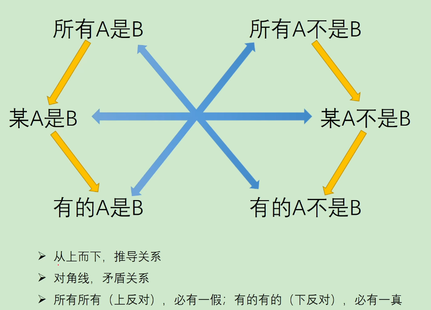

解题思路
1. 对称
2. 中心对称
3. 点
4. 线
5. 面
6. 逆时针顺时针转动
7. 相加相减
8. 一笔画
一笔画
0个或2个奇点即一笔画
奇点: 丁字口交点与端点， 笔画数 = 奇点/2
解题思路
1. 同义词或反义词
2. 褒义词、贬义词或中性词
3. 词性关系
词性关系
1. 并列关系
1.1 并列矛盾，如“生”，“死”
1.1 并列反对，如颜色中的“黑”，“白”, “红”，“蓝”
2. 包容关系
2.1 种属， 如“苹果”：“水果”
2.1 组成， 如“轮胎”：“汽车”
3. 交叉关系
如“女士”：“教师”, 女士有一部分人是教师，教师有一部分人是女士
4. 对应关系
4.1 材料， 如“小麦”：“馒头”
4.2 工艺， 如“白酒”：“发酵”
4.3 功能， 如“银行卡”：“支付”
4.4 属性， 如“盐”：“咸”
4.5 时间顺序， 如“学习”：“考试”
4.6 依据， 如“航行”：“航线”
4.7 因果， 如“炎热”：“中暑”
4.8 职业， 如“老师”：“上课”
前推后
如果/就/都
如： 如果A, 就B
如： 若A, 则B
如： 只要A, 就B
如： 为了A, 一定B
如： 所有A, 都B
如： A是 B的充分条件
A->B === -B->-A
后推前
如： 只有...A, 才...B
如： 不...A不..B.
如： 除非...A, 否则不...B
如： 除非...A, 否则...-B
如： ...A是...B的必要条件/关键/假设/前提/基础/必要
谁是必不可少的放在后面
B->A
且或
A且B： 两个必须为真
AorB： 可A,可B,可AB, -A->B, -B->A
要么A要么B：非A即B
德摩根定律
-(A且B) === -A或-B
-(A或B) === -A且-B
矛盾关系：
1. A 与 -A
2. A&B 与 -A/-B
3. 注意：A->B的矛盾为A&-B
如：如果下雨就不用上班，否定为：下雨了还是要上班
4.1. 所有是 的否定为 有的不是
5.2. 所有不是 的否定为 有的是
注意：
1. 所有A是B 的否定为 A->-B
2. 有的A是B 的否定推不出 A->-B
2.1. 有的A是B 可以推出 有的B是A
如 有的男性是教师， 可以推出 有的教师是男性
反对关系：
1. 所有都是 和 所有都不是 （必有一假）
可以同假 不可能同时为真
如 10个人里，所有人都及格和所有人都不及格
2. 有的是 和 有的不是 （必有一真）
可以同真 不可能同时为假
如 10个人里，有的人及格和有的人不及格
论据与论点
论据经过论证能得到论点
如，论点:“良心讲师”， 论据:“免费讲好课”， 论证:“免费讲好课都是良心讲师”
快速找论点
1. 结合提问方式 问啥找啥
2. 首尾句原则
3. 关键词：因此，所以，认为，由此推出，据此可知...